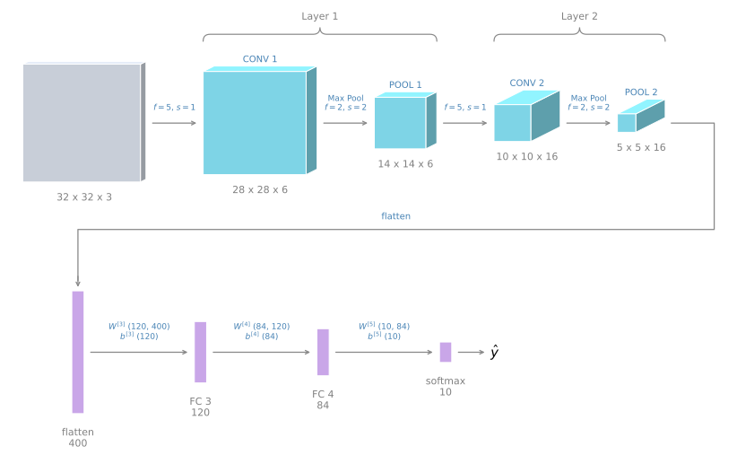
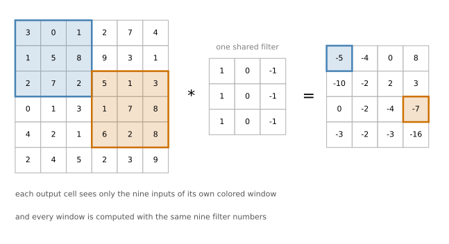

Full ConvNet Example and Why Convolutions
deep-learning
convolutional-neural-networks
computer-vision
architecture
parameter-sharing
A complete LeNet-inspired ConvNet with its activation shapes and parameter counts, and why parameter sharing and sparse connections make convolutions work so well.
You now know pretty much all the building blocks of a full convolutional neural network. This page puts them together into one complete network, counts every activation and every parameter in it, and then explains why convolutional layers are such a good idea in the first place.
Complete ConvNet Example
Suppose you are inputting an image which is 32 by 32 by 3, so it is an RGB image, and you are trying to do handwritten digit recognition. You have a number such as a 7 in a 32 by 32 RGB image, and you are trying to recognize which one of the ten digits from zero to nine it is.
The network used here is inspired by one of the classic neural networks called LeNet-5, created by Yann LeCun many years ago. What is shown here is not exactly LeNet-5, but many of the parameter choices were inspired by it.
With a 32 by 32 by 3 input, say the first layer uses a 5 by 5 filter, a stride of 1, and no padding. The output of this layer, if you use 6 filters, is 28 by 28 by 6, and this layer is called Conv 1. So you apply 6 filters, add a bias, apply the non-linearity, maybe a ReLU, and that is the Conv 1 output.
Next, apply a pooling layer. Use max pooling with a 2 by 2 filter and a stride of 2, so \(f = 2\) and \(s = 2\). When no padding is written, it is \(p = 0\). This reduces the height and the width of the representation by a factor of 2, so 28 by 28 becomes 14 by 14, and the number of channels stays the same, giving 14 by 14 by 6. This is called the Pool 1 output.
NoteCounting Layers
In the ConvNet literature there are two conventions that are inconsistent with each other about what counts as a layer. One convention calls the conv layer a layer and the pool layer another layer.
When people report the number of layers in a neural network, they usually count only the layers that have weights, that have parameters. Because the pooling layer has no weights and no parameters, only a few hyperparameters, the convention used here is that Conv 1 and Pool 1 together are Layer 1. The 1 at the end of the names Conv 1 and Pool 1 also reflects the fact that both are viewed as part of Layer 1 of the neural network. Pool 1 is grouped into Layer 1 because it does not have its own weights.
If you read articles online and research papers, you will sometimes hear the conv layer and the pooling layer described as if they were two separate layers. Both are slightly inconsistent terminologies, and on these pages the counting is by layers that have weights.
Given a 14 by 14 by 6 volume, apply another convolutional layer with a filter size of 5 by 5, a stride of 1, no padding, and 16 filters this time. That gives a 10 by 10 by 16 volume, called Conv 2. Then do max pooling again with \(f = 2\) and \(s = 2\), which halves the height and the width, leaving 5 by 5 by 16 with the same number of channels as before. That is Pool 2, and in this convention Conv 2 and Pool 2 together are Layer 2.
Now \(5 \times 5 \times 16 = 400\), so flatten Pool 2 into a 400 by 1 dimensional vector. Think of this as flattening the volume out into a set of 400 neurons.
Take those 400 units and build the next layer with 120 units. This is the first fully connected layer, called FC3, because 400 units are densely connected to 120 units. This fully connected layer is just like the single neural network layer seen in the earlier courses, a standard layer with a weight matrix \(W^{[3]}\) of dimension 120 by 400, and a bias parameter that is 120 dimensional, since there are 120 outputs. It is called fully connected because each of the 400 units is connected to each of the 120 units.
Lastly, take the 120 units and add another layer, this time smaller, with 84 units, called fully connected Layer 4. That leaves 84 real numbers that you can feed to a softmax unit. Since the task is recognizing a handwritten digit from 0 to 9, this is a softmax with 10 outputs.
This is a reasonably typical example of what a convolutional neural network might look like. It seems like a lot of hyperparameters, and later sections give more specific suggestions for how to choose them. One common guideline is to not try to invent your own settings of hyperparameters, but to look in the literature to see which hyperparameters worked for others, and to choose an architecture that has worked well for someone else, since there is a good chance it will work for your application as well.
For now, notice again that as you go deeper in the neural network, usually the height and the width decrease. Here it goes from 32 by 32, to 28 by 28, to 14 by 14, to 10 by 10, to 5 by 5. Meanwhile the number of channels increases, going from 3 to 6 to 16, and then the fully connected layers come at the end.
Another pretty common pattern you see in neural networks is to have one or more conv layers followed by a pooling layer, then one or more conv layers followed by a pooling layer, and then at the end a few fully connected layers followed by a softmax.
Activation Shapes and Parameter Counts
Let us go through this network in more detail and look at the activation shape, the activation size, and the number of parameters at each stage. The input was 32 by 32 by 3, and multiplying those numbers out gives 3072, so the activation \(a^{[0]}\) has 3072 numbers in it, and the input layer has no parameters.
| Layer | Activation shape | Activation size | Parameters |
|---|---|---|---|
| Input | (32, 32, 3) | 3072 | 0 |
| CONV 1 (\(f=5\), \(s=1\)) | (28, 28, 6) | 4704 | 456 |
| POOL 1 | (14, 14, 6) | 1176 | 0 |
| CONV 2 (\(f=5\), \(s=1\)) | (10, 10, 16) | 1600 | 2416 |
| POOL 2 | (5, 5, 16) | 400 | 0 |
| FC 3 | (120, 1) | 120 | 48120 |
| FC 4 | (84, 1) | 84 | 10164 |
| Softmax | (10, 1) | 10 | 850 |
The parameter count of a convolutional layer follows from the shape of its filters.
\[ \left(f^{[l]} \times f^{[l]} \times n_c^{[l-1]} + 1\right) \times n_c^{[l]} \]
The 1 inside the brackets is the bias, one per filter. For Conv 1 this gives \((5 \times 5 \times 3 + 1) \times 6 = 456\), and for Conv 2 it gives \((5 \times 5 \times 6 + 1) \times 16 = 2416\). A fully connected layer counts as the size of its weight matrix plus its biases, so FC 3 has \(400 \times 120 + 120 = 48120\) parameters.
There are a few things worth pointing out.
First, notice that the max pooling layers have no parameters at all.
Second, notice that the conv layers tend to have relatively few parameters, as discussed in the earlier sections. In fact a lot of the parameters tend to be in the fully connected layers of the neural network.
Third, notice that the activation size tends to go down gradually as you go deeper in the neural network. If it drops too quickly, that is usually not great for performance. Here it starts at 3072, goes to 4704 and 1600, and then slowly falls to 84 before the softmax output. You will find that a lot of ConvNets have properties and patterns similar to these.
Review Questions
1. Why do Conv 1 and Pool 1 count as a single layer here?
TipAnswer
Because the convention used is to count only layers that have weights, and the pooling layer has no weights, only hyperparameters. Some papers do count the pooling layer separately, so the terminology is not universal.
1. Conv 2 takes a 14 by 14 by 6 input with \(f = 5\), \(s = 1\), \(p = 0\), and 16 filters. Work out both the output shape and the parameter count.
TipAnswer
The output side is \(\lfloor (14 - 5)/1 + 1 \rfloor = 10\), and the number of channels is the number of filters, so the output is 10 by 10 by 16. The parameters are \((5 \times 5 \times 6 + 1) \times 16 = 151 \times 16 = 2416\).
1. Which layers hold most of the parameters in this network, and why?
TipAnswer
The fully connected layers. FC 3 alone has 48120 parameters, more than everything else combined, because it connects every one of the 400 flattened units to every one of the 120 units. The conv layers reuse a small filter across all positions, so they need far fewer numbers.
1. What does it mean when the activation size drops too quickly between layers?
TipAnswer
It usually hurts performance. A good architecture tends to reduce the activation size gradually, which is what happens here as it goes from 3072 down to 84 over several layers rather than all at once.
Why Convolutions
Now let us talk about why convolutions are so useful when you include them in your neural networks. There are two main advantages of convolutional layers over just using fully connected layers, called parameter sharing and sparsity of connections.
Take a 32 by 32 by 3 image, the same one as in the example above, and say you use a 5 by 5 filter with 6 filters, which gives a 28 by 28 by 6 output. Now, \(32 \times 32 \times 3\) is 3072, and \(28 \times 28 \times 6\) is 4704.
If you were to create a neural network with 3072 units in one layer and 4704 units in the next layer, and connect every one of these neurons to every one of those, then the number of parameters in the weight matrix would be
\[ 3072 \times 4704 \approx 14 \text{ million} \]
That is a lot of parameters to train. Today you can train neural networks with even more parameters than 14 million, but considering that this is a pretty small image, it is a lot. And of course, if the image were 1000 by 1000, the weight matrix would become impossibly large.
But if you look at the number of parameters in the convolutional layer, each filter is 5 by 5 by 3, so each filter has 75 parameters plus a bias, giving 76 parameters per filter. With 6 filters, the total number of parameters is
\[ (5 \times 5 \times 3 + 1) \times 6 = 456 \]
So the number of parameters in this conv layer remains quite small. The reason a ConvNet gets away with so few parameters comes down to two things.
Parameter Sharing
Parameter sharing is motivated by the observation that a feature detector, such as a vertical edge detector, that is useful in one part of the image is probably useful in another part of the image as well.
What that means is that if you have figured out, say, a 3 by 3 filter for detecting vertical edges, you can apply that same 3 by 3 filter here, and then at the next position over, and the next position over, and so on. Each of these feature detectors, each of these outputs, can use the same parameters in lots of different positions in the input image in order to detect a vertical edge or some other feature. This is true for low level features such as edges, as well as for higher level features, such as detecting the eye that indicates a face or a cat.
Sharing the same nine parameters to compute all 16 of these outputs is one of the ways the number of parameters is reduced. It also seems intuitive that a feature detector such as a vertical edge detector that is useful for the upper left hand corner of the image has a good chance of being useful for the lower right hand corner of the image too, so you do not need to learn separate feature detectors for the two corners. You might have a dataset where the upper left corner and the lower right corner have different distributions, so they may look a little bit different, but they are usually similar enough that sharing feature detectors all across the image works just fine.
Sparsity of Connections
The second way a ConvNet gets away with relatively few parameters is by having sparse connections.
Here is what that means. Look at one output value computed by a 3 by 3 convolution. It depends only on that 3 by 3 grid of input cells. It is as if that output unit on the right is connected only to nine out of the 36 input features of a 6 by 6 input, and all of the other pixel values have no effect at all on that output. As another example, a different output value depends only on its own nine input features, and the other pixels just do not affect it.

Through these two mechanisms, a neural network has far fewer parameters, which allows it to be trained with smaller training sets and makes it less prone to overfitting.
Translation Invariance
You also sometimes hear that convolutional neural networks are very good at capturing translation invariance. That is the observation that a picture of a cat shifted a couple of pixels to the right is still pretty clearly a cat.
The convolutional structure helps the neural network encode the fact that an image shifted a few pixels should result in pretty similar features, and should probably be assigned the same output label. The fact that you are applying the same filter at all the positions of the image, both in the early layers and in the later layers, helps a neural network automatically learn to be more robust, or to better capture the desirable property of translation invariance.
These are a couple of the reasons why convolutional neural networks work so well in computer vision.
Review Questions
1. State the two properties that keep the parameter count of a conv layer small.
TipAnswer
Parameter sharing, meaning the same filter is reused at every position of the image rather than learning separate weights per position, and sparsity of connections, meaning each output value depends on only a small window of the input rather than on every input pixel.
1. A fully connected layer mapping 3072 units to 4704 units has about 14 million weights. What makes the equivalent conv layer need only 456 parameters?
TipAnswer
The conv layer has 6 filters of size 5 by 5 by 3, so \((75 + 1) \times 6 = 456\) numbers, and those same numbers are reused at all 784 output positions. The fully connected layer instead learns a separate weight for every pair of input and output units.
1. What is translation invariance, and how does the convolutional structure help with it?
TipAnswer
It is the property that shifting an image by a few pixels should not change what it is a picture of. Because the same filter is applied at every position, a shifted input produces essentially the same features, just shifted too, so the network naturally tends to assign it the same label.
1. Which of the following statements about parameter sharing in ConvNets are true? Check all that apply.
It allows gradient descent to set many of the parameters to zero, thus making the connections sparse.
It reduces the total number of parameters, thus reducing overfitting.
It allows parameters learned for one task to be shared even for a different task, which is transfer learning.
It allows a feature detector to be used in multiple locations throughout the whole input image or input volume.
TipAnswer
b and d. Sliding one filter over the entire input is what lets a single feature detector work everywhere in the image, and it is why a conv layer needs so many fewer parameters than a fully connected one, which in turn leaves less room to overfit. Option a describes what regularization can do, and sparsity of connections is a separate property of conv layers rather than a consequence of sharing. Option c describes transfer learning, which reuses parameters across tasks and is a different idea altogether.
1. In lecture, sparsity of connections was given as a benefit of convolutional layers. What does it mean?
Each layer in a convolutional network is connected only to two other layers.
Each activation in the next layer depends on only a small number of activations from the previous layer.
Regularization causes gradient descent to set many of the parameters to zero.
Each filter is connected to every channel in the previous layer.
TipAnswer
b. Every value in the output volume is produced by one filter applied to one small window of the input, so with a 3 by 3 filter it depends on 9 input values and on nothing else. Option d is true of a filter, since a filter does span all input channels, but that is not what sparsity of connections refers to.
Training a ConvNet
Finally, let us put it all together and see how you can train one of these networks.
Suppose you want to build a cat detector and you have a labelled training set, where now \(x\) is an image, and the labels \(y\) can be binary, or one of \(k\) classes. Suppose you have chosen a convolutional neural network structure, taking in the image and then having several convolutional and pooling layers, followed by some fully connected layers, followed by a softmax output that produces \(\hat{y}\).
The conv layers and the fully connected layers have various parameters \(W\) as well as biases \(b\). Any setting of these parameters lets you define a cost function similar to the ones seen in the earlier courses. Starting from randomly initialized parameters \(W\) and \(b\), you compute the cost \(J\) as the sum of the losses of the neural network’s predictions over the entire training set, divided by \(m\).
\[ J = \frac{1}{m} \sum_{i=1}^{m} \mathcal{L}(\hat{y}^{(i)}, y^{(i)}) \]
To train this neural network, all you need to do is use gradient descent, or one of the algorithms such as gradient descent with momentum, RMSProp, Adam, or something else, in order to optimize all the parameters of the neural network so as to reduce the cost function \(J\). If you do this, you can build a very effective cat detector or some other detector.
Review Questions
1. Which parameters of a ConvNet does gradient descent update?
TipAnswer
The filters and biases of the conv layers, and the weight matrices and biases of the fully connected layers. Pooling layers contribute nothing, because they have no parameters.
1. Is anything different about the training procedure compared with a standard neural network?
TipAnswer
No. You define the cost as the average loss over the training set, initialize the parameters randomly, and run gradient descent or one of its variants such as momentum, RMSProp, or Adam. The gradients come from backpropagation exactly as before.
You have now seen all the basic building blocks of a convolutional neural network, the conv layer, the pooling layer, and the fully connected layer, and how to put them together into an effective image recognition system.
A lot of computer vision research has gone into figuring out how to put these basic building blocks together to build effective neural networks, and doing it well requires quite a bit of insight. One of the best ways to build that intuition is to see a number of concrete examples of how others have done it, which is what the following sections cover.